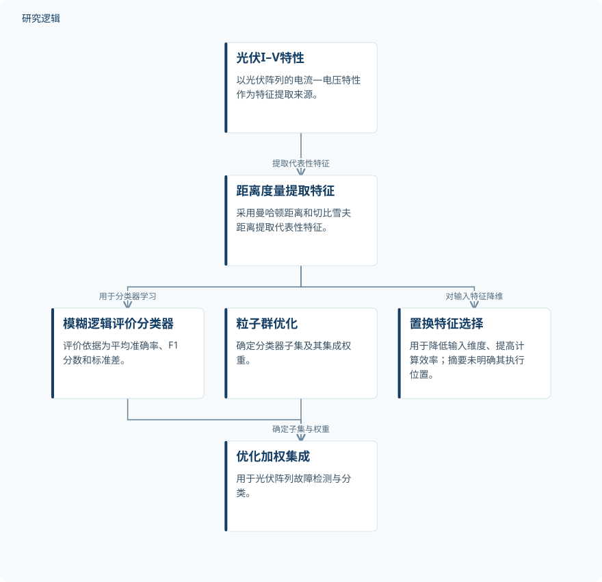

摘要解读
融合概率与逻辑机器学习的光伏故障诊断方法
Integrated Probabilistic and Logic-Based Machine Learning Approach for Photovoltaic Fault Diagnosis
解读更新 2026-10-28 08:55 · 依据公开摘要整理，未核验全文细节
光伏阵列故障诊断不仅要分得准，还要在复杂工况下保持稳定。这项研究将模糊逻辑与粒子群优化结合，用于筛选分类器并分配集成权重，为理解多故障识别中的模型协作提供了一个具体案例。
文章目录
光伏诊断的难点不只是平均准确率
摘要指出，现有人工智能诊断方法仍可能在关键故障工况下表现不佳，或依赖大量训练数据，在多故障分类中的稳健性也有限。因此，研究关注的不只是提高总体分类表现，还包括不同运行条件下的可靠识别。
从电流—电压特征到分类器加权组合
研究首先从光伏阵列的电流—电压（I–V）特性中，利用曼哈顿距离和切比雪夫距离提取代表性特征。框架还采用置换特征选择，以降低输入维度、提高计算效率；摘要未展开具体特征定义与筛选细节。
在模型组合环节，模糊逻辑系统依据平均准确率、F1分数和标准差评价多个机器学习分类器；粒子群优化则确定分类器子集及相应的集成权重。两者分别承担分类器评价与组合优化任务，形成优化后的加权集成。
依据摘要整理的光伏故障诊断框架


概括摘要明确的方法关系；分支不表示完整执行顺序，也不表达未报告的实验配置。这不是论文原图。
下载 SVG图示关系说明
实线表示相邻阶段的信息流，虚线表示跨阶段联系或反馈。
光伏I–V特性 → 距离度量提取特征：提取代表性特征；距离度量提取特征 → 模糊逻辑评价分类器：用于分类器学习；模糊逻辑评价分类器 → 优化加权集成：提供分类器评价；粒子群优化 → 优化加权集成：确定子集与权重；距离度量提取特征 → 置换特征选择：对输入特征降维
实验数据上的平均分类准确率达到98.78%
验证数据涵盖正常运行，以及线间故障、开路故障和退化故障，并涉及不同辐照度、温度、失配及故障阻抗条件。这表明摘要所述验证考虑了多种运行与故障条件，但尚不能据此判断各条件的覆盖密度。
摘要报告，优化后的加权集成平均分类准确率为98.78%，优于常规融合策略，并在关键故障工况下保持可靠表现。作者据此认为该框架具有稳健且计算高效的诊断能力；摘要未给出各故障类别的独立指标或计算耗时。
总体成绩之外，验证边界仍需查阅
仅凭摘要，无法判断实验样本量、类别分布、训练与测试划分，以及是否进行了跨设备或跨场景验证。比较对象的具体名称、性能差距、重复试验与不确定性也未展开，因此不宜将总体准确率直接理解为所有工况下均有同等表现。
摘要将大训练集需求列为背景问题，但没有报告本方法的数据需求随样本量变化的结果，不能据此认定其已解决少样本诊断问题。这些都是当前资料无法判断的事项，不代表论文没有开展相关分析。
阅读启发：关注评价指标怎样进入集成决策
阅读启发：值得进一步查阅的是，平均准确率、F1分数与标准差如何共同影响模糊逻辑评价，以及这种评价如何与分类器子集和权重优化衔接。对智能运维读者而言，理解组合决策机制，比只关注最终准确率更有助于把握方法的适用边界。
建议进一步关注关键故障工况的定义、不同类别的误判情况，以及特征筛选前后的效率证据。这些问题直接对应摘要提出的稳健性与计算效率目标，但现有资料尚不足以给出答案。
以上为本站阅读启发与建议，不是论文已验证的结论。